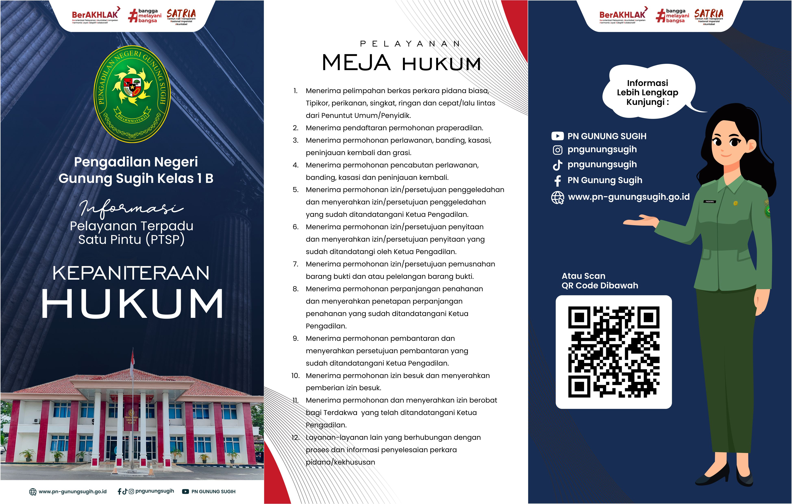

Selamat Datang di E-Brosur Pelayanan Terpadu Satu Pindu (PTSP)
Pengadilan Negeri Gunung Sugih Kelas I B
Di sini Anda dapat menemukan berbagai layanan yang kami sediakan.
LAYANAN KEPANITERAAN HUKUM
1. Permohonan pendaftaran akta pendirian CV
2. Permohonan pendaftaran waarmaking surat pernyataan waris
3. Permohonan pendaftaran penolakan waris
4. Permohonan surat keterangan tidak tersangkut perkara pidana dan perdata
5. Permohonan melaksanakan penelitian dan riset
